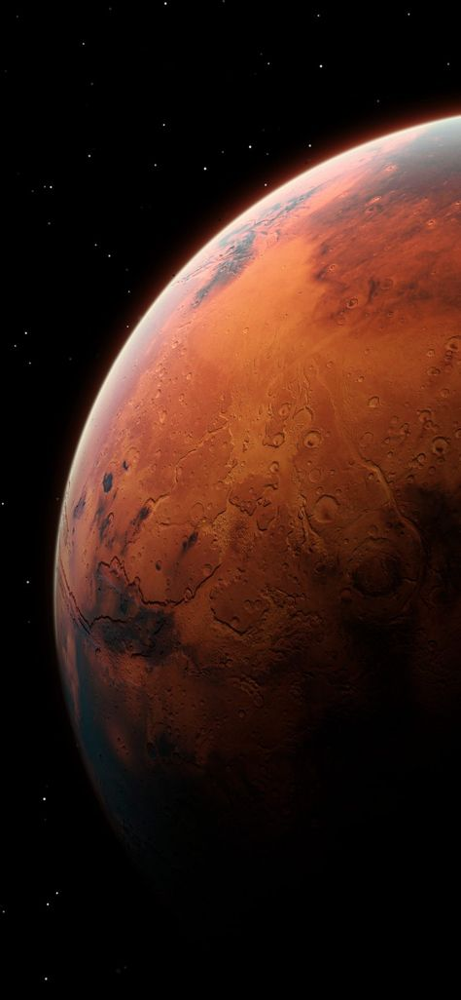

Зміст
Поточний статус
Проектування міжпланетних подорожей — складний процес, а дослідження Марса апаратами має високий рівень невдач, особливо під час перших місій. Приблизно 2/3 всіх космічних місій до Марса зазнали невдач ще до початку наукової роботи. Деякі місії досягли значного успіху, зокрема, два марсоходи з програми Mars Exploration Rover працювали тривалий час після завершення гарантованого строку роботи.[1] 6 листопада 2017 на поверхні Марса діють два ровери (Марсохід «Оппортьюніті» програми Mars Exploration Rover та Марсохід «К'юріосіті» програми Марсіанська наукова лабораторія), а також на орбіті перебувають шість орбітальних апаратів: Марс Одіссей, Марс-експрес, Mars Reconnaissance Orbiter, Мангальян, Mars Atmosphere and Volatile Evolution, ExoMars Trace Gas Orbiter, які надали науковцям великий обсяг інформації щодо Марса. Не було здійснено жодної місії з повернення зразків з Марса на Землю, місія з повернення зразків з супутника Марса — Фобоса (Фобос-Ґрунт) — зазнала невдачі[2].
24 січня 2014 року, NASA звітувала про поточний стан вивчення Марса роверами «Оппортьюніті» і «К'юріосіті». Було зазначено, що ровери будуть шукати докази існування життєздатних форм, включаючи автотрофів, хемотрофів або літотрофів, а також докази існування води, включаючи озерні рівнини, в яких могли існувати форми життя[3][4][5][6]. Пошук доказів існування життя, органічого вуглецю на Марсі — це на сьогодні основне завдання NASA[3]. BACK
Марсіанська система
Людство тривалий час цікавиться Марсом. Ранні спостереження за допомогою телескопа виявили зміни кольору на поверхні, що було ідентифіковано як зміна сезонів. Подальші спостереження у телескоп виявили два супутники — Фобос і Деймос, полярні льодяні шапки і місцевість, відому як Гора Олімп — найвища відома гора Сонячної системи. Відкриття пожвавили інтерес до вивчення і дослідження червоної планети. Марс — кам'яна планета, така ж як і Земля, він утворився у той самий час, проте має вдвічі менший діаметр, набагато тоншу атмосферу та холодну, пустельну поверхню[7].BACK
Стартове вікно
Щоб витрачати якомога менше палива для перельоту від Землі до Марса, запуски здійснюються раз на 2 роки та 2 місяці (приблизно через 780 днів)[8]. Найменші витрати палива для перельоту можливі раз на 16 років[8]. Наприклад, це було у 1969 і 1971 стартових вікнах, досягнувши мінімуму в 1970-х, наступний цикл припав на 1986 і 1988 роки[8]. BACK
Минулі і діючі місії
Починаючи з 1960 року, СРСР здійснив серію запусків зондів до Марса, зокрема, перший проліт повз Марс і важку посадку (Марс 1962B).[9] Перший успішний проліт Марса відбувся 14—15 липня 1965 року апаратом Марінер-4 (НАСА).[10] 14 листопада 1971 року КА Марінер-9 став першим космічним апаратом на орбіті іншої планети.[11] Кількість даних, отриманих від зондів різко збільшилась з поліпшенням технологій.[9]
Перший контакт з поверхнею був здійснений радянськими зондами: Спускним апаратом Марс-2 — 27 листопада 1971 і апаратом Марс-3 — 2 грудня 1971. Марс-2 зазнав аварії під час спуску, а Марс-3 перестав працювати приблизно після 20 секунд після посадки.[12] Марс-6 зазнав невдачі під час приземлення, проте зумів передати деякі дані щодо атмосфери.[13] У 1975 році NASA запустила Програму «Вікінг», яка складається з двох орбітальних апаратів, обидва мали спускні апарати, вони успішно здійснили м'яку посадку 1976 року. Вікінг-1 передавав дані впродовж 6 років, Вікінг-2 — три роки. Спускні апарати Вікінг передали перші кольорові світлини Марса[14].
Радянські зонди Фобос-1 і Фобос-2 були відправлені до Марса 1988 року для вивчення його супутників із фокусуванням на Фобосі. Зв'язок із Фобосом-1 було втрачено під час подорожі до Марса. Фобос-2 зробив світлини Фобоса й Марса, проте до початку від'єднання посадкових платформ зв'язок із ним було втрачено[15]. Приблизно 2/3 всіх космічний апаратів зазнали невдачі і не виконали своїх місій, тому система Марса має статус складної цілі для досліджень[16]. Місії, які зазнали невдач після Фобоса-1 і 2 (1988): Mars Observer[en] (запущений 1992) Марс-96 (1996) Mars Climate Orbiter (1999) Mars Polar Lander with Deep Space 2 (1999) Nozomi (2003) Бігль-2 (2003) Фобос-Ґрунт з Інхо-1 (2011) Скіапареллі (2016)
Після невдачі апарату Mars Observer orbiter, NASA запустила місію Mars Global Surveyor, яка досягла орбіти Марса 1997 року. Ця місія була повністю успішна, і завершила картографування планети на початку 2001 року. Зв'язок з апаратом було втрачено в листопаді 2006 під час третьої розширеної місії апарата, орбітальний апарат відпрацював 10 років у космосі. Місія NASA Mars Pathfinder мала у складі станції дослідницький марсохід Sojourner, який приземлився у місцевості Ares Vallis на Марсі влітку 1997 року і відправив на Землю багато світлин[17].
Апарат Фенікс приземлився біля північного полюса Марса 25 травня 2008 року.[18] Його роботизована рука занурилась у марсіанський ґрунт, в результаті чого 20 червня 2008 року було підтверджено наявність водяного льоду[19][20]. Місію було завершено після того, як 10 листопада 2008 року зв'язок було втрачено[21]. 2008 року ціна транспортування вантажу з поверхні Землі до поверхні Марса становила приблизно $309 000 за кілограм[22].
Розетта пролетіла Марс приблизно на відстані 250 км 2007 року[23]. Dawn пролетів повз Марс у лютому 2009 для здійснення гравітаційного маневру для досягнення Вести й Церери[24].
BACKДіючі місії
Апарат NASA Mars Odyssey вийшов на орбіту Марса 2001 року[25]. Спектрометр гамма променів цього апарата виявив значну кількість водню у верхньому прошарку реголіту Марса. Цей водень може свідчити про великі запаси водяного льоду під поверхнею[26].
Місія Mars Express (ЄКА) досягла Марса 2003 року. Апарат мав на борту спускний апарат Бігль-2, але після приземлення апарат на зв'язок не вийшов і його визнали втраченим у лютому 2004 року. У січні 2005 камера Mars Reconnaissance Orbiter знайшла Бігль-2: апарат здійснив м'яку посадку, проте сонячні панелі й антени не розгорнулись[27][28]. На початку 2004 спектрометр апарата Mars Express знайшов у марсіанській атмосфері метан. ЄКА у червні 2006 оголосило про відкриття явища полярного сяйва на Марсі[29].
У січні 2004 два марсоходи NASA з програми Mars Exploration Rover — Марсохід «Спіріт» і Марсохід «Оппортьюніті» здійснили посадку на поверхню Марса. Обидва марсоходи досягли своїх цілей. Серед наукових досягнень — докази того, що рідка вода існувала деякий час у минулому в обох місцях посадки. Піщані бурі чистили сонячні панелі роверів, це підвищувало їх працездатність, збільшуючи вироблення енергії[30]. Марсохід «Спіріт» працював до 2010 року, коли припинив передавати дані через падіння в піщану дюну[2].
10 березня 2006 року зонд NASA Mars Reconnaissance Orbiter досяг орбіти Марса для виконання дворічної наукової місії. Апарат розпочав фотографування марсіанської поверхні й спостереження за погодними умовами, щоб знайти придатні для посадки майбутніх місій місця. Цей зонд зробив перші світлини активних лавин на північному полюсі 3 березня 2008[31].
Місія Марсіанська наукова лабораторія була запущена 26 листопада 2011, вона транспортувала Марсохід «К'юріосіті» на поверхню Марса 6 серпня 2012 року. Марсохід більший і сучасніший, ніж ровери програми Mars Exploration Rover і має швидкість до 90 м/год.[32] Наукові дослідження, що проводились — це дистанційний хімічний аналіз гірських порід на відстані 7 м.[33] Наступна місія, що була відправлена до Марса — MAVEN.
Індійська організація космічних досліджень і розробок відправила до Марса орбітальний апарат Мангальян 5 листопада 2013. Апарат був успішно виведений на орбіту Марса 24 вересня 2014. Це четверте космічне агентство, яке успішно відправило апарат до Марса поряд з СРСР, NASA і ЄКА[34]. Індія — перша країна, яка змогла вивести космічний апарат на орбіту Марса з першої спроби[35].
Апарат ExoMars Trace Gas Orbiter прибув до системи Марса 2016 року й доправив тестовий спускний апарат Скіапареллі. Посадка визнана частково успішною через зіткнення з поверхнею, хоча апарат передавав дані під час спуску.[36]
Об'єднані Арабські Емірати 20 липня 2020 р. запустили науковий та технологічий зонд на Марс. Це перша така місія до Червоної планети, ініційована арабською країною. Запуск безпілотного зонду «Аль-Амаль» (в перекладі з арабського «Надія»), або Hope, відбувся 20 липня 2020 з Японії за допомогою японської ракети H-IIA, з території наукового центру Танеґашіма на півдні Японії. Планується, що він досягне Марсу в лютому 2021 року та перебуватиме на орбіті планети щонайменше два роки. «Аль-Амаль» долучиться до щонайменше восьми активних місій, які станом на 2020 рік досліджують Марс.[37]
Китай у липні 2020 року запустив свій перший зонд з дослідження Марса "Тяньвень-1". Очікується, що зонд досягне Марса через сім місяців - в лютому 2021 року. Космічна станція пробуде на орбіті Марса два місяці, а в квітні висадить на планету марсохід, який займеться вивченням поверхні і пошуком води. Мета китайської місії полягає в тому, щоб знайти сліди життя на Марсі, а також вивчити можливості для його потенційної колонізації людиною.[38]
BACKОгляд місій
Нижче наведений огляд місій, орієнтованих переважно на орбітальні апарати і пролітні КА. Дивись також Приземлення на Марс, а також Марсохід.
Програма «Марінер»
У 1964 році Лабораторія реактивного руху зробила дві спроби досягти Марса. Ідентичні космічні апарати Марінер-3 і Марінер-4 були спроектовані, щоб здійснити перші обльоти Марса. Марінер-3 був запущений 5 листопада 1964, але обтічник ракети не розкрився належним чином і місія була провалена. Три тижні пізніше — 28 листопада 1964 року, Марінер-4 був успішно запущений у подорож до Марсу. Марінер-4 пролетів повз Марс 14 липня 1965, забезпечивши науковців першими крупноплановими світлинами іншої планети. Світлини поступово були передані через невеликий рекодер зонду, який також виявив ударні кратери. Це забезпечило науковців більш точними даними щодо планети. Зонд виміряв атмосферний тиск — 1 % від земного, були виміряні денні температури −100 °C (−148 °F). Дані щодо магнітного поля[45][46] або марсіанських радіаційних поясів — не було виявлено. Нові дані потрібно було врахувати для проектування марсіанських спускних апаратів і показали, що життя на Марсі могло існувати в більш суворих умовах, ніж передбачалось раніше.[47][48][49][50] NASA продовжила програму Марінер, запустивши ще два апарати до Марса — Марінер-6 і 7. Вони були запущені у наступне пускове вікно і досягли Марса 1969 року. Під час подорожі один з апаратів був втрачений. Марінер-9 став першим апаратом, що успішно вийшов на орбіту Марса. Коли Марінер-9 досяг Марса 1971 року, то разом із двома радянськими орбітальними апаратами (Марс-2 і Марс-3) спостерігав на планеті пилову бурю. Поки тривала буря, керівники місії зробили світлини Фобоса. Коли буря на поверхні Марса вщухла, апарат зробив світлини, які дозволили зробити припущення про існування рідкої води на поверхні планети в минулому. Ці світлини засвідчили суттєвий прогрес у порівнянні з попередніми місіями. Вони також остаточно визначили справжню сутність марсіанських альбедо.[джерело?] Наприклад, місцевість Nix Olympica була однією з місцевостей, яку можна було побачити навіть під час піщаної бурі і вважається найвищою горою в Сонячній системі. BACK